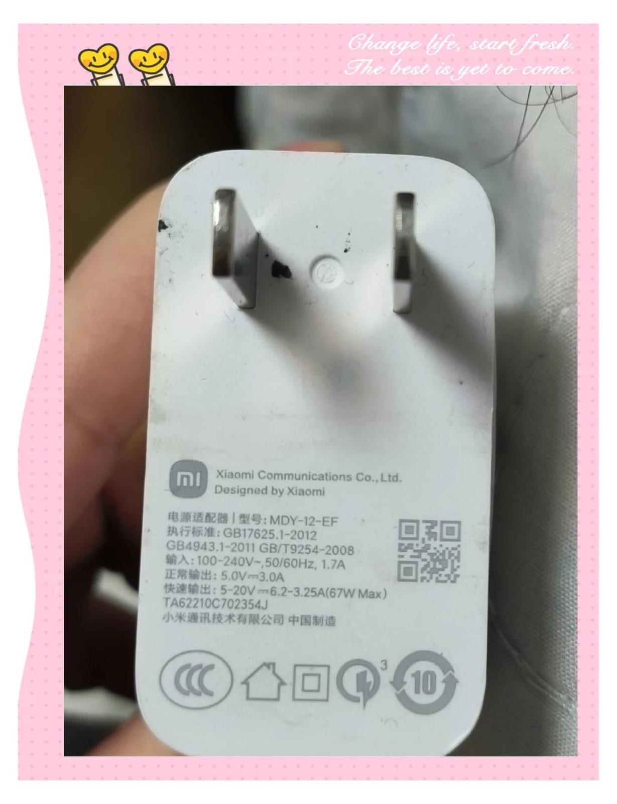

小米 67W 氮化镓充电器

小米 67W 氮化镓充电器用 GaN 功率器件把 67W 大功率塞进小巧机身，一个充电器兼顾手机、平板与轻薄本。支持 PD 等主流快充协议、多口同时输出（功率智能分配），折叠插脚方便收纳，是性价比路线的多面手。
客观评测
小米 67W 氮化镓充电器基于 GaN 功率器件，将最高 67W 输出（约数）压缩进明显小于同功率传统充电器的体积，折叠插脚便于携带。接口为 USB-C 与 USB-A 多口组合（约数），支持 PD、QC 等主流协议，多设备同时插入时功率智能分配，此时单口输出会下降。对支持小米私有快充的机型可跑出更高功率，其他设备按各自协议充电。宽电压输入适合出国使用，安全保护齐全，包装通常不含线材（以销售版本为准）。
主观点评
它把“一个充电器走天下”变成了现实：手机、平板、轻薄本、Switch 全部喂饱，包里少带两块砖头的快乐谁用谁知道。体积小到随手塞进侧袋，价格一百多也很小米。注意多口同插时别指望满速给笔记本充电，急用就让它专心服务一台设备。
优点与不足
- GaN 小体积大功率，出差一个头走天下
- 百余元价位性价比突出
- 多口同充，手机电脑一器搞定
- 多口同用时单口功率下降，笔记本满速需独占
- 不附赠线材，另购增加隐性成本
- 私有快充协议仅部分小米机型可满速
参数规格
| 最大输出 | 单口最高 67W（约数） |
|---|---|
| 功率器件 | 氮化镓（GaN） |
| 接口 | USB-C 与 USB-A 多口（约数） |
| 协议 | PD / QC 等主流快充协议（含部分私有协议，视机型） |
| 多口输出 | 支持多设备同充，功率智能分配（约数） |
| 输入 | 100-240V 宽电压 |
| 插脚 | 折叠插脚（约数） |
| 体积 | 小于同功率传统充电器 |
| 安全 | 过压、过流、过温、短路保护 |
| 适用 | 手机、平板、笔记本电脑、Switch 等 |
| 附件 | 仅充电器，线材需另配（约数） |
| 质保 | 以官方质保政策为准 |